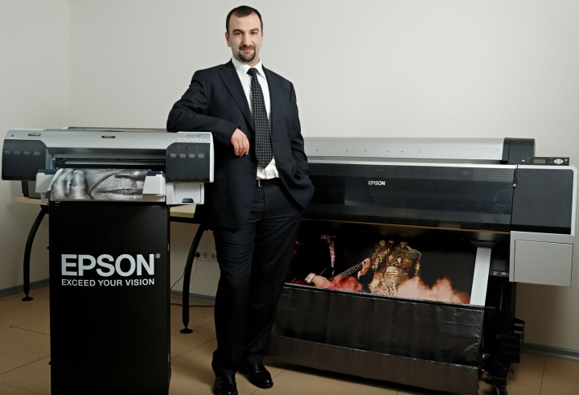
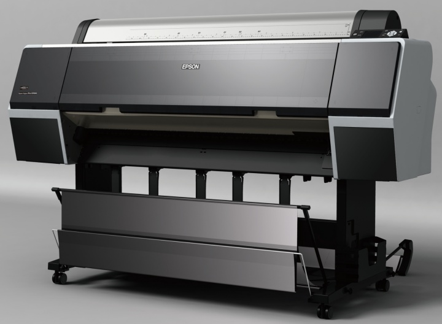
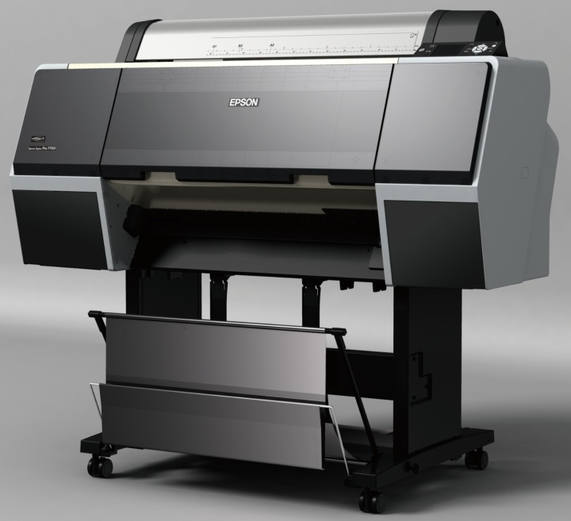
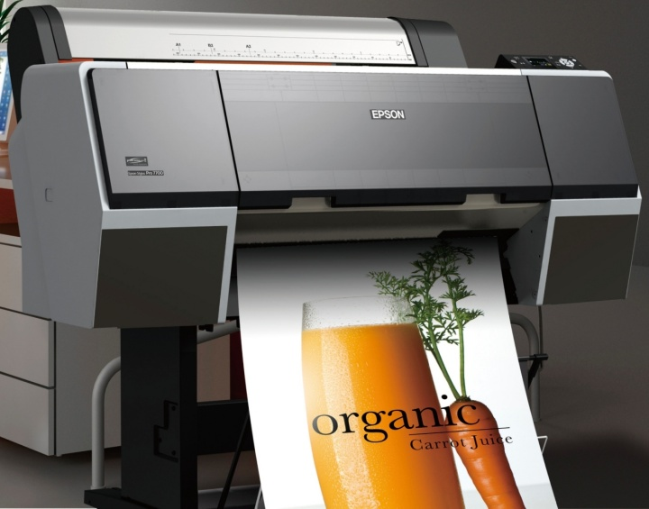

Baský teknolojileri ve dijital görüntüleme alanýnda ürünleri olan Epson, harita, proje ve tasarým çýktýsýna ihtiyaç duyan CAD ve GIS kullanýcýlarýna yönelik, Epson Stylus Pro 7700 ve 9700 yazýcýlarýný geliþtirdi. Epson ProGrafik Kanal Müdürü Çaðdaþ Sevgen, yeni yazýcýlarýnýn en büyük özelliðinin CAD ve GIS kullanýcýlarýna, az mürekkeple yüksek çözünürlükte çýktý alma imkanýna sahip olmasýný gösteriyor. Sevgen, bu yeni ürünlere iliþkin sorularý þöyle yanýtladý;

Ürün yelpazenizde CAD/GIS çýktýsý almak isteyenlere yönelik hangi modelleriniz var?
Epson olarak, harita, proje ve tasarým çýktýsýna ihtiyaç duyan CAD ve GIS kullanýcýlarýna yönelik, Epson Stylus Pro 7700 ve 9700 yazýcýlarýný geliþtirdik. Yeni model yazýcýlarýmýz sivil mühendislik, inþaat þirketleri, tasarým bölümleri, ofislere sunum ya da saklama amaçlý profesyonel kalitede hýzlý çýktýlarý düþük maliyetle alma imkaný tanýyor. Bu noktada proje çýktýlarý alýnýrken ihtiyaç duyulan en ince çizgilerin bile bu modellerimizle beklentilerin çok üstünde bir kalitede basýlabildiðini söyleyebiliriz. Ayrýca bu ürünlerimizde, 3D projeler ve tasarýmlarýn bitmelerinden sonra yapýlan "Render" iþlemlerinin müþterilerimiz için ne kadar olduðunu da unutmadýk. Bu tip uygulamalar müþterilerimizin yaptýklarý gerek projeleri gerekse de tasarýmlarý müþterilerine sunarken kullandýklarý ve müþterilerine tasarýmlarýn son halini göstermeyi amaçladýklarý bir uygulama. Ýþte tam da bu noktada Epson fotoðraf ve tasarým alanýndaki bilgisini çok baþarýlý bir þekilde bu ürünlere de uygulamýþ durumda.
Epson Stylus Pro 7700 & 9700 Printer

Epson Stylus Pro 9700 Printer
EPSON Stylus Pro 9700 teknik özellikleri |
| Geniþlik |
44" (A0+/B0+) |
| Baský Teknolojisi |
Otomatik kafa hizalama, Epson LUT Teknolojisi |
| Baský Kafasý |
10 Kanallý Epson MicroPiezo |
| Çözünürlük |
1440x1440 dpi (RIP ile 2880x2880 elde edilebilir) |
| Mürekkep Sistemi |
5 renk UltraChrome mürekkep (C, VM, Y, PK, MK) |
| Rulo Kaðýt Geniþliði |
44 inch'e kadar |
| Rulo Kaðýt Kalýnlýðý |
0,08 - 1,50 mm |
| Arabirimler |
USB 2.0 |
| |
Ethernet 10Base-T/100Base-TX |
| Hafýza |
256MB |
| Güç Tüketimi |
70W |
Yeni ürünlerini
zin en önemli özelliðini özetlemek isterseniz neler söyleyeceksiniz?
Öncelikle, CAD ve GIS kullanýcýlarýna, nerede çýktý almak isterlerse istesinler çizim-tasarýmlarýný en yüksek çözünürlükte alma imkaný sunarken, bu iþi en az mürekkebi tüketerek yaptýðýný hatýrlatmak isterim. Ayrýca daha öncede belirttiðim gibi bu ürünler tasarlanýrken, müþterilerimizin birçok ihtiyacýný karþýlamaya yönelik geliþtirildi. Mesela müþteri sunumlarýný hazýrlarken müþterilerimizin genel iþlerini kolaylaþtýrmak için, kalýn materyallere direkt baský, birçok farklý malzemeye baský yeteneði gibi sektörde ciddi dikkat çeken özellikler, müþterilerimizden takdir toplamamýzý saðladý. Diðer bir örnek ise Micro piezo teknolojisi kullanan ürünlerimiz müþterilerimize, yatýrýmý bir kere yaptýktan sonra bir daha baský kafasý deðiþikliði gibi ciddi maliyetler açmýyor...

Epson Stylus Pro 7700 Printer
Epson Stylus Pro 7700 Printer teknik özellikleri |
| Baský Teknolojisi |
Otomatik kafa hizalama, Epson LUT Teknolojisi |
| Baský Kafasý |
10 Kanallý Epson MicroPiezo |
| Çözünürlük |
1440x1440 dpi |
| Mürekkep Sistemi |
5 Renk UltraChrome mürekkep (C, VM, Y, PK, MK) |
| Mürekkep Yuvalarý |
350 ml ve 700 ml |
| Rulo Kaðýt Geniþliði |
A1/24" (210 mm - 610 mm) |
| Rulo Kaðýt Kalýnlýðý |
0,08 - 1,50 mm |
| Arabirimler |
USB 2.0 |
| |
Ethernet 10Base-T/100Base-TX |
| Hafýza |
256MB |
Epson Stylus Pro 7700 ve 9700 yazýcýlarýnýz hangi ölçülerde çýktý alma imkaný sunuyor?
Kullanýcýya isteðe göre kusursuz ve geniþ bir renk yelpazesinde baský alma imkaný sunuyor. Kullanýcýlara 61 cm 111,8 cm'lik seçenekler sunan yeni model yazýcýlarýmýzla, daha net, daha kalýcý ve gerçek renklerle POS materyalleri, CAD/GIS çýktýlarý alýnabiliyor. Ayrýca kullanýcýlarýmýza rulo veya sayfa baskýsý imkaný sunduðunu da hatýrlatmakta fayda var.
Yeni ürünleriniz CAD tarafýnda hangi teknolojiyi destekliyor?
Epson Stylus Pro 7700 ve 9700 yazýcýlarý, AutoCAD tarafýndan kullanýlan Heidi Device Interface (HDI) grafiklerini destekleyen sürücüleri içeriyor. Böylece kullanýcýnýn yüksek hýzda farklý uygulama ve boyutlarda oluþturulan iþlerin baskýsýný almasý daha da kolaylaþýyor.
Epson UltraChrome Vivid Magenta Mürekkeple kullanan yazýcýlar, renk, kalýcýlýk ve farklý materyallerde ayný baský sonucu alacak þekilde tasarlandý. Yazýcýlar, mükemmel baský sonuçlarý ve ayrýntý için 3,5 pikolitre kadar küçük tanecikler üretebilen deðiþken boyutta damla teknolojisiyle çalýþýyor. Bu da profesyonellere ihtiyaç duyduklarý en ince çizimlerden, reklam sunumlarýna kadar geniþ bir alanda en iyi sonuçlarý vaat ediyor…
Epson Stylus pro 7900
Epson'un MicroPiezo teknolojisi nedir kullanýcýya ne gibi avantajlar sunuyor?
Epson'un geliþmiþ baský kafasý MicroPiezo™, yazdýrma sýrasýnda veri üretimini hýzlandýran geliþmiþ sýkýþtýrma ve açma teknolojilerini kullanýyor. Yeni Epson MicroPiezo™ TFP baský kafasý daha fazla dayanýklýlýkla geliþmiþ performansý birleþtiriyor. Böylece, yazýcýlarýn en büyük sorunu olan baský kafasýnýn ömrü uzuyor. Diðer bir deðiþle orijinal mürekkep kullanýlmasý þartý ile, müþterilerimiz ömür boyu baský kafasý deðiþtirme ihtiyacý duymuyorlar.
Cihazlarýn baskýya hazýrlanma süresi nedir, hangi kartuþlarý kullanýyorlar?
Epson Stylus Pro 7700 ve 9700 yazýcýlarý otomatik kanal kontrol sistemine sahip. Bu sistem, kanal durumunu kontrol etmek ve gerekliyse baský kafasýný temizlemek için otomatik sensör kullanýyor. Otomatik olmasýndan dolayý baþlama - bitiþ süresi 15 saniyeden az sürüyor.
Yeni yazýcýlarýmýz, yazdýrma iþlemine uygun iki kartuþ boyutundan birini seçme olanaðý saðlýyor. Mevcut 350 ml / 700 ml'lerde en az kartuþ deðiþikliði ile yüksek üretkenlik saðlayabilen cihazlarýn üzerinde bulunan parlak renkli LCD ekran, mürekkep seviyesi, hýzlý temizleme opsiyonu, kaðýt kesme ve iþ iptaline kadar tüm özellikleri kolayca kontrol etme imkaný sunuyor.
Ayrýca, yeni yazýcýlarda kaðýt besleme makarasýný açýp kapama ve temizlemeyi de kolaylaþtýrdýk. Epson'un ürettiði, yeni milsiz kenar sistemi kaðýdýn deðiþtirilmesini kolaylaþtýrdýðý gibi, daha az yer kaplamasýný saðlýyor. Tüm kaðýt tipleri, boyut ve gerilimleri kullanýlabiliyor.
Yeni döner kaðýt kesicisi sayesinde, saniyeler içinde düzgün ve temiz olarak kesim yaptýðý gibi, her tip rulo kaðýdý keserek, elle kesme gereðini ortadan kaldýrýyor. Epson Stylus Pro 7700 & 9700, 100Base TX/10Base T Ethernet aðýna hazýr olmasýndan dolayý da, ofis veya stüdyoda kurulumla paylaþýmýný kolaylaþtýrýyor.

Epson Stylus Pro 7700 Printer
Daha fazla bilgi için:
Çaðdaþ Sevgen
Epson ProGrafik Kanal Müdürü
Cagdas_Sevgen@epson.it
Epson Türkiye
Kaptanpaþa Mah. Piyalepaþa Bulv.ý Ortadoðu Plaza Kat:9 No:14
Okmeydaný Ýstanbul
Tel: (212) 221 00 51
www.epson.com.tr
|